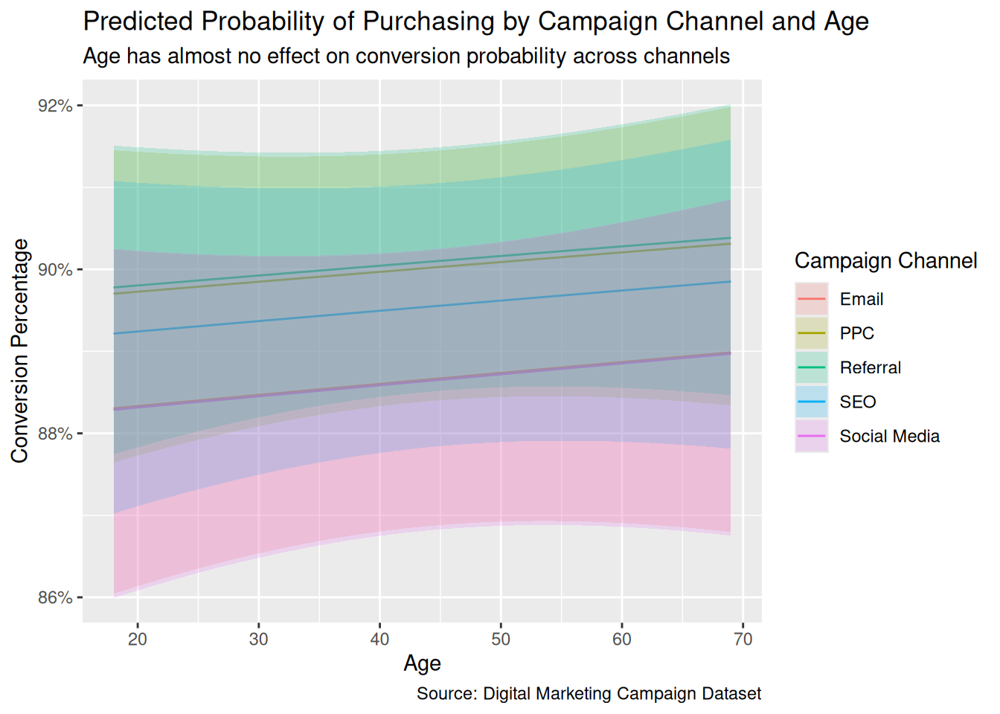
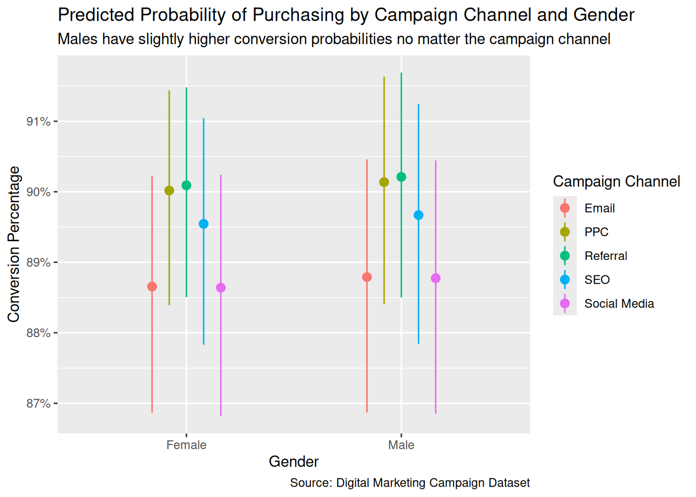

| Logistic Regression Model: Conversion by Campaign Channel | ||||||
| Estimating the effect of different campaign channels on user conversion rates | ||||||
| term | estimate | std.error | statistic | p.value | conf.low | conf.high |
|---|---|---|---|---|---|---|
| (Intercept) | 1.90329 | 0.07542 | 25.23519 | 0.00000 | 1.75809 | 2.05390 |
| CampaignChannelPPC | 0.11573 | 0.10737 | 1.07789 | 0.28108 | −0.09472 | 0.32642 |
| CampaignChannelReferral | 0.11856 | 0.10641 | 1.11418 | 0.26520 | −0.09011 | 0.32726 |
| CampaignChannelSEO | 0.05894 | 0.10798 | 0.54586 | 0.58517 | −0.15267 | 0.27087 |
| CampaignChannelSocial Media | −0.01698 | 0.10699 | −0.15868 | 0.87392 | −0.22677 | 0.19287 |
| Source: Digital Marketing Campaign Dataset | ||||||
Model and Analysis
Question
Causal: What is the average causal effect of getting an email, compared to seeing a social media post, on the probability that a customer purchases a product?
Variables
Units: Each customer identified by their unique user id.
Covariates: Age, Gender, Income, AdSpend, WebsiteVisits, PagesPerVisit, TimeOnSite, SocialShares, PreviousPurchases.
Treatment: CampaignChannel.
Outcome: Conversion.
Limitations
In columns: The campaign channel is not specific enough. The “Email” treatment might be the same as the “Referral” treatment if the referral was just done by email. So, the CampaignChannel might not have valid correspondence to the treatments we really want to measure. Therefore, we need more information on each treatment within CampaignChannel to determine if they are distinct.
Between time periods: The data is from an experiment that took place two years ago, 2024, and the effect of advertisements on users may have changed from 2024 to 2026. Although two years might not have much of an effect, changes may have occured in trends, the economy, and technology. So, the slope on the effect of watching an advertisement might have changed between 2024 and present day, which is what we want to predict.
Model representativeness: The data might not represent the population. In this dataset, the conversion rates for all Campaign Channels are around 85% to 90%, which is extremely unrealistic. However, we’re only trying to answer the causal effect, which is between treatments, so this shouldn’t be a major concern if the experiment was done correctly. Another subtle thing to note is how the data is comprised of 60% females and 40% males, a slight disproportionate distribution that may or may not add a small bias.
Potential treatment bias: We don’t know if treatment assignment was random. This is important because if treatment assignment was not random, our final estimates would be biased. For example, if users who are more likely to purchase a product are more likely to be assigned to a specific treatment group, then our estimates of the causal effect would change drastically.
Probability Family: Bernoulli
Link Function: Logit link (logistic regression)
Models
Interpretation
Social Media resulted in an average decrease in the probability of purchasing a product. The log-odds of purchasing the product is 0.0170 lower for a customer who used Social Media (compared to Email), with a confidence interval of -0.227 to 0.193. This confidence interval passes zero, meaning that the effect of Social Media on the probability of purchasing a product compared to Email is not statistically significant.
| Logistic Regression Model: Conversion with Campaign Channel and other Covariates | ||||||
| Adjusting for other covariates | ||||||
| term | estimate | std.error | statistic | p.value | conf.low | conf.high |
|---|---|---|---|---|---|---|
| (Intercept) | −1.25177 | 0.21503 | −5.82147 | 0.00000 | −1.67352 | −0.83045 |
| CampaignChannelPPC | 0.14304 | 0.11148 | 1.28309 | 0.19946 | −0.07545 | 0.36179 |
| CampaignChannelReferral | 0.15135 | 0.11044 | 1.37038 | 0.17057 | −0.06519 | 0.36799 |
| CampaignChannelSEO | 0.09147 | 0.11214 | 0.81569 | 0.41468 | −0.12827 | 0.31156 |
| CampaignChannelSocial Media | −0.00165 | 0.11143 | −0.01477 | 0.98822 | −0.22013 | 0.21693 |
| Age | 0.00133 | 0.00237 | 0.56113 | 0.57471 | −0.00331 | 0.00597 |
| GenderMale | 0.01339 | 0.07224 | 0.18538 | 0.85293 | −0.12776 | 0.15548 |
| Income | 0.01085 | 0.00942 | 1.15115 | 0.24967 | −0.00762 | 0.02933 |
| AdSpend | 0.01458 | 0.00129 | 11.29161 | 0.00000 | 0.01206 | 0.01713 |
| WebsiteVisits | 0.01850 | 0.00248 | 7.44534 | 0.00000 | 0.01364 | 0.02339 |
| PagesPerVisit | 0.13129 | 0.01383 | 9.49009 | 0.00000 | 0.10427 | 0.15851 |
| TimeOnSite | 0.10029 | 0.00861 | 11.65494 | 0.00000 | 0.08351 | 0.11725 |
| SocialShares | −0.00101 | 0.00122 | −0.82811 | 0.40761 | −0.00342 | 0.00139 |
| PreviousPurchases | 0.12822 | 0.01252 | 10.23966 | 0.00000 | 0.10378 | 0.15288 |
| Source: Digital Marketing Campaign Dataset | ||||||
Interpretation
Main: Adjusting for the covariates, the coefficient for Social Media campaigns is -0.0017, with a confidence interval of -0.220 to 0.217. The estimate decreased by a factor of ten compared to the previous model. Accounting for other variables further proved that Social Media and Email have relatively the same effect on conversion rates. Besides that, this model also tells us the coefficients for all the other variables:

- Age: Although positive, the confidence interval for age passes zero, so age does not have a clear effect on the probability of purchasing the product

Gender: Males have a slightly higher chance for conversion. However, the confidence interval for gender passes zero, so gender does not have a clear effect on the probability of purchasing the product
Income: The confidence interval for income passes zero, so income does not have a clear effect on the probability of purchasing the product
AdSpend: The confidence interval for ad spend does not pass zero, so higher ad spend increases the probability of purchasing the product
WebsiteVisits: The confidence interval for website visits does not pass zero, so visiting the website more often increases the probability of purchasing the product
PagesPerVisit: The confidence interval for pages per visit does not pass zero, so viewing more pages per visit increases the probability of purchasing the product
TimeOnSite: The confidence interval for time on site does not pass zero, so spending more time on site increases the probability of purchasing the product
SocialShares: The confidence interval for social shares passes zero, so social sharing does not have a clear effect on the probability of purchasing the product

- PreviousPurchases: The confidence interval for previous purchases does not pass zero, so having more previous purchases increases the probability of purchasing the product
Overall: Demographic variables like age, gender, and income do not have significant effects of conversion, but rather demostrations of personal interest like time on site do.
Data Generating Mechanism Formula
\[\begin{aligned} \widehat{\text{logit}(P(\text{Conversion} = 1))} &= -1.25 + 0.143 \cdot \text{CampaignChannel}_{\text{PPC}} + 0.151 \cdot \text{CampaignChannel}_{\text{Referral}} \\ &\quad + 0.0915 \cdot \text{CampaignChannel}_{\text{SEO}} - 0.00165 \cdot \text{CampaignChannel}_{\text{Social Media}} \\ &\quad + 0.00133 \cdot \text{Age} + 0.0134 \cdot \text{Gender}_{\text{Male}} + 0.0108 \cdot \text{Income}_{10k} \\ &\quad + 0.0146 \cdot \text{AdSpend}_{100} + 0.0185 \cdot \text{WebsiteVisits} + 0.131 \cdot \text{PagesPerVisit} \\ &\quad + 0.100 \cdot \text{TimeOnSite} - 0.00101 \cdot \text{SocialShares} + 0.128 \cdot \text{PreviousPurchases} \end{aligned}\]
Answering the initial question
| Average Comparisons (Marginal Effects) | |||||
| Estimating average causal effects of campaign channels and covariates | |||||
| term | contrast | estimate | std.error | conf.low | conf.high |
|---|---|---|---|---|---|
| AdSpend | +1 | 0.00146 | 0.00013 | 0.00121 | 0.00171 |
| Age | +1 | 0.00013 | 0.00024 | −0.00033 | 0.00060 |
| CampaignChannel | PPC - Email | 0.01445 | 0.01127 | −0.00764 | 0.03653 |
| CampaignChannel | Referral - Email | 0.01524 | 0.01114 | −0.00660 | 0.03708 |
| CampaignChannel | SEO - Email | 0.00939 | 0.01151 | −0.01317 | 0.03196 |
| CampaignChannel | Social Media - Email | −0.00017 | 0.01179 | −0.02328 | 0.02294 |
| Gender | Male - Female | 0.00134 | 0.00724 | −0.01285 | 0.01554 |
| Income | +1 | 0.00109 | 0.00094 | −0.00076 | 0.00293 |
| PagesPerVisit | +1 | 0.01263 | 0.00127 | 0.01013 | 0.01513 |
| PreviousPurchases | +1 | 0.01235 | 0.00116 | 0.01008 | 0.01461 |
| SocialShares | +1 | −0.00010 | 0.00012 | −0.00034 | 0.00014 |
| TimeOnSite | +1 | 0.00975 | 0.00081 | 0.00816 | 0.01133 |
| WebsiteVisits | +1 | 0.00185 | 0.00025 | 0.00136 | 0.00233 |
| Source: Digital Marketing Campaign Dataset | |||||
Adjusting for all the covariates, the average causal effect of Social Media as a means of campaigning, compared to receiving an Email, on the probability that a customer purchases a product is -0.00017, with a confidence interval between -0.02328 to 0.02294. In other words, compared to Emails, receiving a Social Media treatment resulted in a 0.017 percentage point decrease in the probability that you’ll buy a product (confidence interval: -2.3284 to 2.2936 percentage points). However, this causal effect between Social Media and Email isn’t significant, due to the confidence interval passing zero. Additionally, the causal effect itself is extremely small.
Graph
Key note: Realistic conversion rates are likely much lower in percent, but should share the same slope. (Distribution shift)